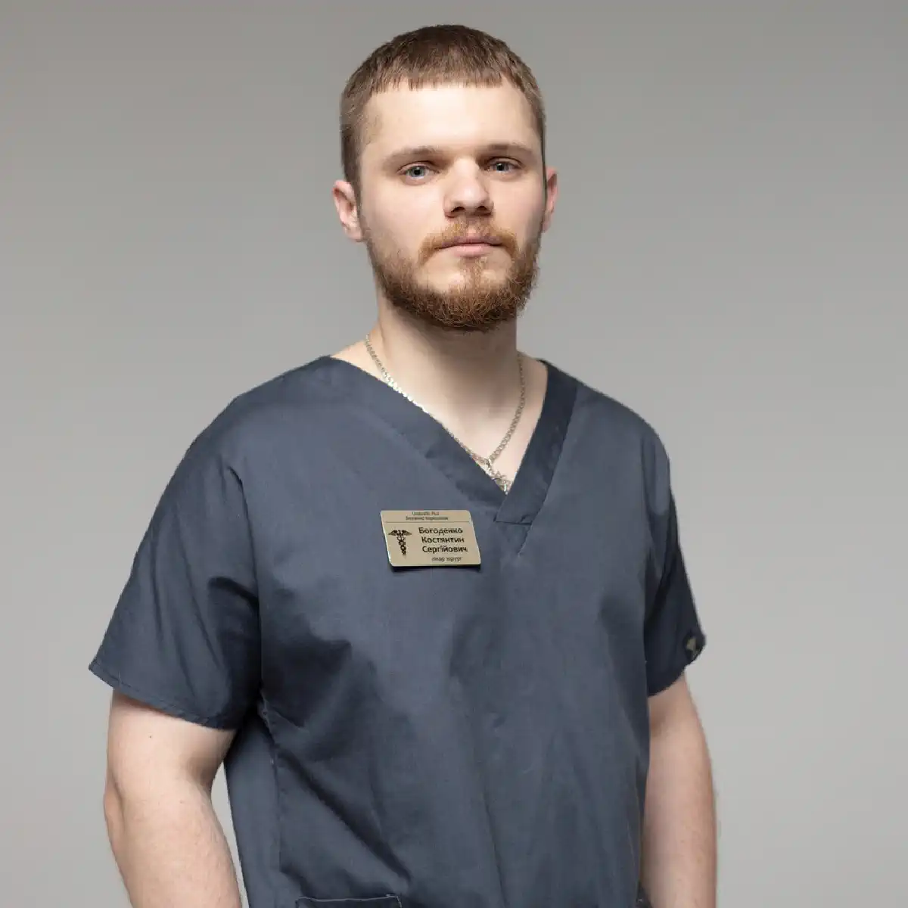
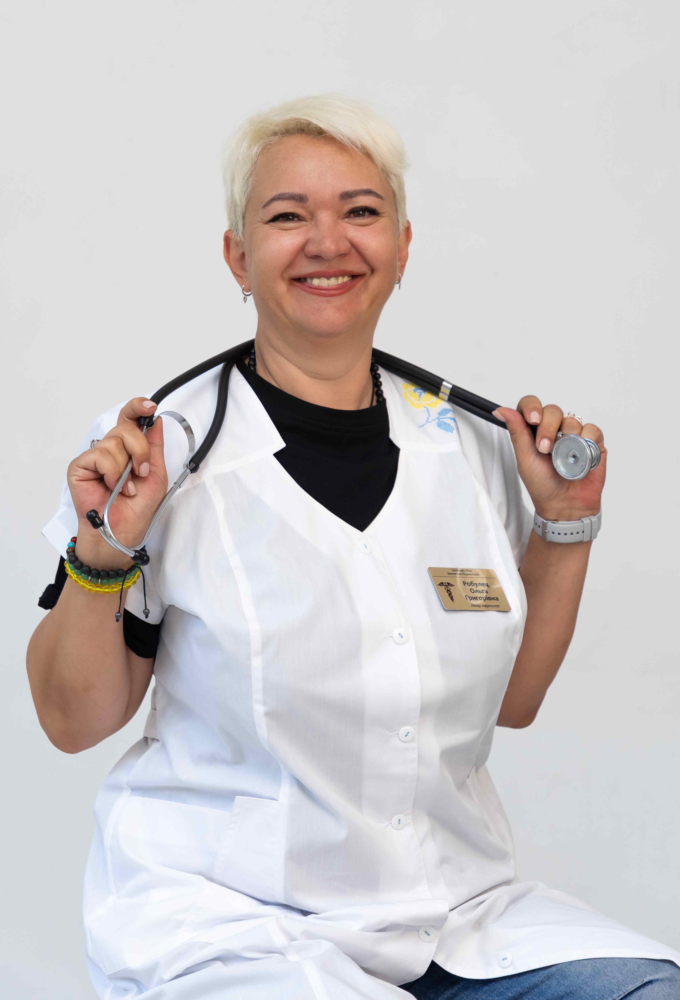

+38(068)
79 72 782
+38(068)
79 72 782Подшивка от наркотиков Харьков
Радикальное лечение зависимости


Бесплатная консультация, работаем круглосуточно 24/7
Радикальное лечение зависимости

Дата написания: 21 февр. 2026 г.
Последнее обновление: 4 окт. 2026 г.
Подшивка от наркотиков в Харькове рассматривается как один из возможных этапов комплексного лечения прежде всего опиоидной зависимости. В бытовой речи под «подшивкой» часто понимают медикаментозную блокаду, рассчитанную на определённый период. Конкретный препарат, лекарственная форма и способ введения должны подбираться врачом после обследования пациента. Медикаментозная блокада не устраняет психологические причины употребления и не заменяет полноценное лечение наркотической зависимости. Комплексный подход может включать медицинскую стабилизацию, работу с мотивацией, психотерапию, профилактику срывов и дальнейшее наблюдение.
При опиоидной зависимости в медикаментозной терапии может применяться налтрексон — антагонист опиоидных рецепторов. Он блокирует действие опиоидов на соответствующие рецепторы и уменьшает ожидаемый эффект от употребления героина, морфина, кодеина и ряда других опиоидов. Сам налтрексон не является опиоидом и не вызывает наркотического опьянения. Важно понимать, что блокада действует именно в отношении опиоидной системы. Она не является универсальным методом против амфетамина, метамфетамина, кокаина, каннабиса или большинства синтетических стимуляторов. Поэтому перед процедурой требуется консультация нарколога в Харькове, во время которой врач определяет тип зависимости и подходящий вариант лечения.
Для медикаментозной блокады опиоидной зависимости может использоваться налтрексон. Существуют различные лекарственные формы препарата. Выбор конкретной формы зависит от медицинских показаний, доступности зарегистрированного препарата и индивидуальной схемы лечения. Термин «подшивка» не следует автоматически отождествлять с любым препаратом длительного действия. Использовать необходимо только лекарственные средства и формы, разрешённые для медицинского применения. Если пациент поступает после недавнего употребления наркотиков, сначала может потребоваться капельница при наркотической интоксикации или другая симптоматическая терапия по медицинским показаниям.
Подшивка налтрексоном в Харькове может рассматриваться после прекращения употребления опиоидов и оценки состояния пациента. Налтрексон занимает опиоидные рецепторы и препятствует формированию ожидаемого эффекта от повторного приёма опиоидного вещества. Начинать такую терапию на фоне сохраняющейся физической зависимости от опиоидов опасно: введение налтрексона может спровоцировать выраженный синдром отмены. Поэтому перед процедурой необходимо уточнить последнее употреблённое вещество, его дозу, продолжительность зависимости и время последнего приёма. При необходимости предварительно проводится детоксикация от наркотиков, после которой врач повторно оценивает готовность пациента к медикаментозной блокаде.
Налтрексон применяется прежде всего при зависимости от опиоидов. К этой группе относятся героин, морфин, кодеин, фентанил, метадон, трамадол и другие вещества, воздействующие на опиоидные рецепторы. При зависимости от стимуляторов подход будет другим. Например, при амфетамине, метамфетамине или кокаине налтрексон не следует представлять как универсальную защиту от употребления. В таких ситуациях программа лечения наркомании в Харькове формируется индивидуально и может включать медицинскую коррекцию последствий употребления, психотерапию и реабилитацию.
При зависимости от героина, фентанила и других опиоидов медикаментозная блокада может рассматриваться только после прекращения употребления и безопасного прохождения необходимого подготовительного периода. Особенно внимательно врач оценивает пациентов после метадона и бупренорфина. Эти вещества действуют продолжительно, поэтому перед налтрексоном может потребоваться более длительный период без опиоидов. Окончательный срок определяет врач после осмотра, оценки симптомов и при необходимости дополнительных обследований. При регулярном употреблении фентанила может дополнительно потребоваться специализированное лечение зависимости от фентанила.
Медикаментозная блокада может рассматриваться у пациента с подтверждённой опиоидной зависимостью после прекращения употребления и прохождения необходимой подготовки. Важным условием является добровольное желание человека продолжать лечение и соблюдать рекомендации врача. Подшивка не проводится как экстренная процедура во время передозировки, выраженной ломки или тяжёлой интоксикации. Вначале требуется стабилизировать состояние и только затем выбирать дальнейшую противорецидивную терапию. При выраженном синдроме отмены сначала проводится лечение наркотической абстиненции, а вопрос медикаментозной блокады решается после стабилизации.
Если в организме сохраняются опиоиды или пациент находится в состоянии физической зависимости, начинать лечение налтрексоном без соответствующей подготовки нельзя. Детоксикация позволяет прекратить поступление вещества, контролировать симптомы отмены и подготовить пациента к следующему этапу терапии. Объём помощи зависит от вещества, длительности употребления, сопутствующих заболеваний и выраженности симптомов. В относительно стабильном состоянии некоторые этапы помощи могут проводиться амбулаторно, однако тяжёлая ломка, нарушение сознания, судороги или дыхательные расстройства требуют стационарного лечения. При наличии показаний врач может назначить капельницу от наркотиков, но инфузионная терапия является лишь частью медицинской помощи и не заменяет лечение зависимости.
Продолжительность периода без опиоидов определяется индивидуально и зависит от конкретного вещества, его продолжительности действия, длительности употребления и состояния пациента. После короткодействующих опиоидов подготовительный период обычно короче, чем после метадона, бупренорфина и других длительно действующих препаратов. Нельзя ориентироваться исключительно на субъективное улучшение самочувствия. Даже после уменьшения ломки физическая зависимость может сохраняться. Слишком раннее начало терапии налтрексоном способно вызвать резко выраженный синдром отмены. Если прекращение употребления сопровождается тяжёлым состоянием, пациенту может потребоваться наркологический стационар в Харькове.
Перед началом лечения врач собирает анамнез, уточняет употребляемые вещества, дозы, длительность зависимости, время последнего употребления и предыдущие попытки лечения. Также оцениваются заболевания печени, почек, сердечно-сосудистой системы, психические нарушения и принимаемые лекарственные препараты. В зависимости от ситуации могут назначаться лабораторные исследования, оценка функции печени, анализы крови и тестирование на наличие наркотических веществ. Особое значение имеет исключение продолжающегося употребления опиоидов перед началом терапии. При необходимости пациенту предлагают тест на наркотики в Харькове, результаты которого оцениваются вместе с клинической картиной и данными осмотра.
Консультация необходима для определения показаний и возможных рисков. Врач выясняет, какие вещества употребляет пациент, как давно сформировалась зависимость, когда была последняя доза и возникали ли ранее передозировки или выраженная ломка. Во время консультации обсуждаются варианты лечения, ожидаемый эффект медикаментозной блокады, ограничения и дальнейший план. Пациент должен понимать, что препарат не позволяет безопасно употреблять опиоиды и не является гарантией отсутствия срыва. Если человек не может самостоятельно приехать на первичный осмотр и его состояние позволяет лечиться вне стационара, возможен вызов нарколога на дом в Харькове.
Налтрексон нельзя начинать у пациента, который продолжает принимать опиоиды, находится в состоянии выраженной опиоидной абстиненции или сохраняет физическую зависимость от них. Противопоказания и ограничения также зависят от конкретного препарата и лекарственной формы. Врач отдельно оценивает состояние печени, сопутствующие заболевания, беременность, принимаемые препараты и другие факторы риска. Перед началом лечения необходимо учитывать официальную инструкцию конкретного лекарственного средства. Самостоятельное применение препаратов для блокады без предварительного осмотра нарколога недопустимо.
Некоторые этапы подготовки к лечению, включая консультацию и оценку состояния стабильного пациента, могут проводиться на дому. Однако инвазивные процедуры должны выполняться только там, где имеются соответствующие медицинские условия, оборудование и возможность оказать помощь при осложнениях. Особенно это касается процедур, предполагающих хирургическое вмешательство. Домашний формат не должен использоваться, если у пациента тяжёлая ломка, нарушение сознания, выраженная интоксикация, судороги, психоз или другие опасные симптомы. В такой ситуации безопаснее организовать госпитализацию в наркологический стационар.
Перед процедурой пациент проходит осмотр. Врач оценивает наличие остаточной интоксикации или абстиненции, измеряет давление и пульс, уточняет состояние сознания, проверяет результаты анализов и подтверждает необходимый период без опиоидов. Если требуется дополнительная стабилизация, сначала проводится детоксикация в стационаре. Только после устранения острых симптомов решается вопрос о медикаментозной блокаде. После введения препарата или проведения другой назначенной процедуры пациент получает рекомендации относительно режима, возможных реакций и действий при возникновении желания снова употребить наркотик.
Если для лечения используется именно зарегистрированная имплантационная лекарственная форма, место установки определяется её инструкцией и врачом. Процедура должна проводиться в стерильных медицинских условиях. При этом нельзя путать имплантацию и пролонгированную внутримышечную инъекцию. Это разные способы введения препарата, поэтому конкретный вариант выбирается после консультации и оценки медицинских показаний. Способ введения необходимо обсуждать с врачом, а не выбирать только по названию услуги медикаментозная блокада от наркотиков.
Если конкретная зарегистрированная форма препарата предусматривает имплантацию, вмешательство проводится с соблюдением правил асептики и антисептики. Перед процедурой врач исключает противопоказания, оценивает состояние пациента и объясняет особенности последующего ухода. После вмешательства необходимо наблюдать за местом установки. Усиление боли, выраженный отёк, покраснение, выделения, повышение температуры или ухудшение общего состояния являются поводом обратиться к врачу. Независимо от формы препарата подшивка должна оставаться частью комплексного лечения зависимости, а не самостоятельной заменой всей программы.
Продолжительность действия определяется конкретным препаратом и лекарственной формой. Нельзя обещать всем пациентам одинаковый срок блокады без указания препарата и схемы лечения. Одни лекарственные формы требуют регулярного приёма, другие обладают пролонгированным действием. Поэтому срок медикаментозной защиты определяется индивидуально после выбора препарата. По окончании назначенного периода пациенту требуется повторная консультация по лечению наркотической зависимости, чтобы оценить тягу, риск срыва и необходимость продолжения терапии.
Срок действия зависит прежде всего от лекарственной формы, дозировки и характеристик конкретного препарата. Также значение имеет соблюдение пациентом назначенной схемы лечения. Нельзя самостоятельно увеличивать интервал между визитами или считать, что медикаментозная защита сохраняется неопределённо долго. По мере завершения действия препарата блокирующий эффект ослабевает. Поэтому после процедуры важно продолжать наблюдение и выполнять индивидуальную программу лечения наркозависимости.
При употреблении опиоидов на фоне действия налтрексона ожидаемый наркотический эффект может быть значительно ослаблен или заблокирован. Это не делает употребление безопасным. Особенно опасно пытаться увеличивать дозу, чтобы преодолеть действие препарата. Большое количество опиоидов может привести к тяжёлому отравлению, потере сознания и угнетению дыхания. Если употребление всё же произошло, важно не скрывать его от врача и при ухудшении состояния обращаться за помощью при передозировке наркотиками.
Попытка получить привычный эффект путём значительного увеличения дозы опиоида представляет серьёзную опасность. Блокада рецепторов не означает, что наркотик перестаёт представлять угрозу для организма. Кроме того, во время периода воздержания толерантность к опиоидам снижается. После ослабления или прекращения действия налтрексона доза, которая раньше переносилась пациентом, может оказаться опасной и привести к передозировке. При редком дыхании, невозможности разбудить человека, посинении губ или потере сознания требуется скорая помощь при наркотическом отравлении, а не плановый визит специалиста.
Характер побочных реакций зависит от конкретного препарата и способа введения. При применении налтрексона могут возникать тошнота, головная боль, нарушения сна, слабость, головокружение и другие реакции. Для инъекционных или имплантационных форм возможны болезненность и местная реакция в области введения. Особое внимание уделяется симптомам возможного нарушения функции печени. При пожелтении кожи или глаз, потемнении мочи, выраженной слабости, стойкой боли в животе или значительном ухудшении самочувствия необходимо обратиться к врачу. После процедуры пациент должен иметь возможность получить наркологическую помощь 24/7, если состояние неожиданно ухудшается.
Медикаментозное лечение зависимости не должно проводиться тайно. Пациенту необходимо объяснить цель процедуры, действие препарата, ограничения, возможные побочные реакции и последствия употребления опиоидов после блокады. Добровольное участие особенно важно потому, что ни один препарат не может полностью контролировать поведение человека. Если пациент не мотивирован на прекращение употребления, одной медикаментозной блокады обычно недостаточно. Родственникам можно обратиться за мотивационной консультацией нарколога, чтобы обсудить безопасные способы побудить близкого человека начать лечение.
Обращение за лечением зависимости может проводиться конфиденциально в пределах действующего законодательства и правил медицинского учреждения. Информация о состоянии здоровья пациента относится к врачебной тайне. Во время первичного обращения специалист оценивает характер употребления и предлагает наиболее подходящий план помощи. При необходимости сначала проводится стабилизация, детоксикация, а после неё решается вопрос медикаментозной блокады. Для многих пациентов анонимная наркологическая помощь в Харькове снижает психологический барьер перед обращением к врачу и позволяет раньше начать лечение.
Стоимость подшивки от наркотиков начинается от 15000 грн.
Завершение периода действия препарата не означает, что зависимость вылечена. После медикаментозной блокады необходимо оценить тягу к наркотикам, эмоциональное состояние, риск возвращения в прежнее окружение и другие факторы возможного срыва. Врач может предложить продолжить медикаментозное лечение, изменить его схему или сделать больший акцент на психотерапевтической помощи. Особенно важно не возвращаться самостоятельно к прежней дозе опиоидов. После периода воздержания толерантность снижается, из-за чего риск передозировки может увеличиваться.
Подшивка воздействует на определённый фармакологический механизм, но не устраняет привычки, психологическую тягу, социальные проблемы и причины, которые поддерживали употребление. Поэтому медикаментозное лечение желательно сочетать с психотерапией, профилактикой срывов, работой с родственниками и восстановлением социальной активности. Комплексный подход помогает не просто переждать срок действия препарата, а постепенно сформировать устойчивое поведение без наркотиков. При длительной зависимости может быть рекомендована реабилитация наркозависимых, продолжительность которой определяется индивидуальными потребностями пациента.
Подшивку не проводят во время острой передозировки или тяжёлой ломки. В таких ситуациях первоочередная задача — стабилизировать жизненно важные функции и устранить непосредственную угрозу для здоровья. При потере сознания, редком или поверхностном дыхании, судорогах, посинении губ, тяжёлом возбуждении или быстром ухудшении состояния необходимо вызывать экстренную медицинскую помощь. При подозрении на передозировку опиоидами медицинскими специалистами может применяться налоксон, который блокирует действие опиоидов и используется при угнетении дыхания. После устранения острого состояния пациенту может понадобиться срочная наркологическая помощь в Харькове, дальнейшая детоксикация, наблюдение в стационаре и подбор комплексной программы лечения зависимости.
Телефон для консультации и вызова нарколога на дом в Харькове: +38(050-021-69-57)

Статья проверена экспертом
Робулец Ольга
Врач нарколог, ординатор
Возможно интересная статья:
Что такое солевая зависимость (наркотики)

Лечение наркотической зависимости начинается с консультации и оценки состояния пациента. Врач уточняет, какие вещества употреблялись, как долго и в каких количествах, когда был последний приём, есть ли симптомы абстиненции, хронические заболевания и предыдущие попытки лечения. При интоксикации или выраженном синдроме отмены первым этапом может стать медицинская детоксикация и стабилизация состояния. После этого составляется дальнейший план лечения зависимости.
В некоторых случаях медицинскую помощь можно оказать на дому, однако это зависит от вида употреблённого вещества, выраженности интоксикации или абстиненции и общего состояния пациента. Перед началом лечения нарколог оценивает сознание, дыхание, давление, пульс и возможные осложнения. При тяжёлом состоянии или высоком риске осложнений требуется лечение в стационаре.
Стационар необходим, если состояние пациента невозможно безопасно контролировать дома. Показаниями могут быть нарушение сознания, угнетение дыхания, судороги, выраженное возбуждение или психоз, тяжёлое обезвоживание, серьёзные сердечно-сосудистые нарушения, сочетанное употребление нескольких веществ или тяжёлые сопутствующие заболевания. Некоторые виды синдрома отмены также требуют медицинского наблюдения и специализированного лечения.
Программа детоксикации подбирается индивидуально и зависит прежде всего от вещества и состояния пациента. Она может включать медицинское наблюдение, коррекцию обезвоживания и электролитных нарушений, симптоматическую терапию и препараты для уменьшения проявлений синдрома отмены. Для некоторых видов зависимости существуют специальные лекарственные методы лечения. Детоксикация помогает пройти острый период, но сама по себе не устраняет наркотическую зависимость.
Продолжительность детоксикации индивидуальна. Она зависит от употребляемого вещества, длительности и частоты употребления, дозировки, сочетания нескольких веществ и состояния организма. У одних пациентов наиболее выраженные симптомы проходят за несколько дней, у других медицинское наблюдение и лечение требуется дольше. Точные сроки можно определить только после оценки состояния пациента.
При некоторых вариантах лёгкого или умеренного синдрома отмены лечение возможно амбулаторно или на дому под наблюдением врача. Однако тяжёлая ломка, выраженное обезвоживание, нарушения сознания, психические расстройства, судороги или серьёзные сопутствующие заболевания требуют стационара. Тактика также существенно зависит от вида наркотического вещества.
Единого срока не существует. Продолжительность ломки зависит от вещества, его дозы, периода употребления и индивидуальных особенностей организма. Острые симптомы могут продолжаться несколько дней и дольше, а нарушения сна, тревожность, снижение настроения и тяга к веществу иногда сохраняются после завершения острого периода. Поэтому после детоксикации важно продолжать лечение зависимости.
Наркотическая зависимость является хроническим, но поддающимся лечению расстройством. При комплексном лечении можно добиться длительной устойчивой ремиссии, прекратить употребление наркотиков и значительно восстановить качество жизни. Для этого обычно недостаточно только снять ломку или провести детоксикацию — требуется дальнейшая работа с зависимостью и профилактика рецидива.
Лечение может включать медицинскую детоксикацию, медикаментозную терапию, психотерапию, мотивационную работу, лечение сопутствующих психических и соматических нарушений, профилактику рецидива и реабилитацию. При опиоидной зависимости существуют доказанные методы длительной медикаментозной терапии, включая препараты на основе метадона или бупренорфина. Конкретная программа определяется индивидуально.
Для планового лечения важно участие самого пациента и его готовность сотрудничать с врачом. Если человек отказывается от помощи, родственники могут получить консультацию специалиста и обсудить способы мотивировать его обратиться за лечением. Если состояние человека представляет непосредственную угрозу жизни — например, при передозировке, нарушении сознания или дыхания — необходима экстренная медицинская помощь.
Не стоит ограничиваться угрозами, конфликтами или попытками силой заставить человека лечиться. Родственники могут обратиться к специалисту без пациента и получить рекомендации по дальнейшим действиям. Мотивационная работа помогает человеку лучше понять последствия употребления и постепенно сформировать готовность к лечению.
Не каждому пациенту требуется одинаковый формат реабилитации, однако после детоксикации дальнейшее лечение крайне важно. Детокс устраняет или уменьшает острые проявления интоксикации и синдрома отмены, но не решает психологические и поведенческие механизмы зависимости. Реабилитация, психотерапия и другие программы поддержки помогают закрепить трезвость и снизить риск повторного употребления.
Да, в ряде случаев нарколога можно вызвать на дом для оценки состояния пациента после употребления наркотиков. Врач определяет выраженность интоксикации или абстинентного синдрома и решает, возможно ли безопасное лечение дома или необходима госпитализация. При потере сознания, выраженном угнетении дыхания, судорогах, тяжёлом возбуждении или подозрении на передозировку следует обращаться за экстренной медицинской помощью.
Анонимно

Помогли при наркотической зависимости
Номер телефона:
+380 (68) 797 27 82
+380 (50) 021 69 57
Адрес наркологического центра вашего города уточняйте по
телефону
Работаем в: Киеве, Одессе, Львове, Харькове, Днепре,
Запорожье, Черкассах, Чугуеве, Черноморске, Каменском
Telegram: t.me/umbrellaplus
График работы: Круглосуточно